Tracking application - Thingy:91 to Power BI#
Introduction#
Build a tracking application using the Thingy:91 devkit, while leveraging the benefits of the LwM2M protocol and visualizing its data on Microsoft Power BI.
Prerequisites#
- Thingy:91 with SIM with access to LTE-M or NB-IoT networks
- Coiote IoT DM account (premium)
- nRF Cloud account
- nRF Connect for Desktop
- Microsoft Azure account
- Microsoft Power BI account
- Serial communication program e.g. minicom or RealTerm (for Linux or Mac) or PuTTy (for Windows)
Architecture#
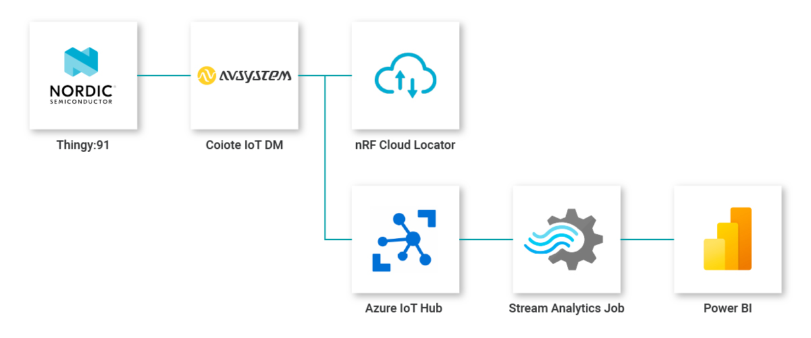
This tutorial uses the Thingy:91 prototyping platform in combination with the Coiote IoT Device Management platform to build a cellular-connected tracking application. The integration with nRF Cloud Locator enables cell-based localization and optimizes the usage of the onboard GNSS. The location data, in combination with additional telemetry data is sent to Azure IoT Hub and visualized using Microsoft Power BI.
Part 1 - Connect the Thingy:91 to Coiote using the LwM2M Anjay client#
Set up the Anjay Zephyr Client#
Get Zephyr and Python dependencies#
To get the Zephyr SDK and dependencies follow the first 4 steps of the instruction provided by the Zephyr Project.
- Select and update OS
- Install dependencies
- Get Zephyr and install Python dependencies
- Install Zephyr SDK
Clone the Anjay Zephyr repository#
Open the command line interface on your machine and clone the Anjay Zephyr repository using Git:
git clone https://github.com/AVSystem/Anjay-zephyr-client
Compile the demo project#
- Connect the Thingy:91 board to a USB port of your machine.
-
Set West manifest path to
Anjay-zephyr-client/demo, manifest file towest-nrf.yml, and runwest updateusing the following commands:west config manifest.path Anjay-zephyr-client/demo west config manifest.file west-nrf.yml west updateFor more information about the west build commands, see the Zephyr Project documentation.
-
Go to the directory
Anjay-zephyr-client/demoand configure the client using menuconfig.Menuconfig allows for, among others, enabling the GPS and cell-based location services. To open the configuration menu, run the command:
west build -b thingy91_nrf9160ns -p -t menuconfigIn the config screen:
- Open the folder:
anjay-zephyr-client --->- Select:
Enable manual requests for cell-based location - Open the folder:
Enable GPS on nRF9160-based devices --->- Select
Enable A-GPS using Nordic Location Services over LwM2M
- Select
- Select:
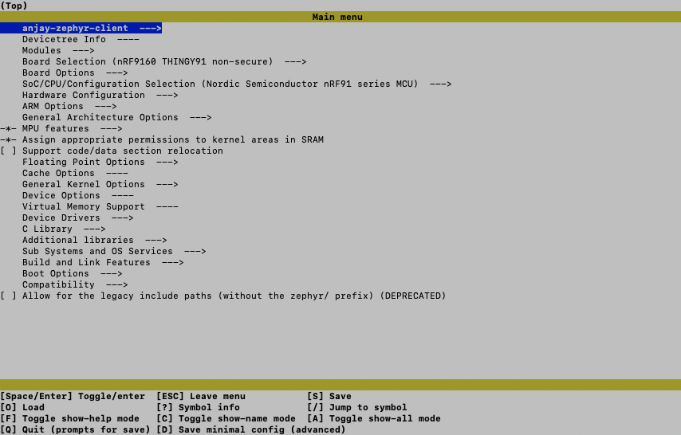
After making the configuration changes, close the config menu by pressing
Qand save it by pressingY.Build the project using the updated configuration by running:
west build - Open the folder:
-
Find the
app_signed.hexfile under thebuild/zephyrdirectory in the project folder.
Write the firmware to the Thingy:91#
- When using the Thingy:91, use the
app_signed.hexfile which you can find in thebuild/zephyrdirectory. -
Flash it using Programmer application in nRF Cloud for Desktop via MCUboot.
For more information on flashing the Thingy:91 using MCU Boot, see link
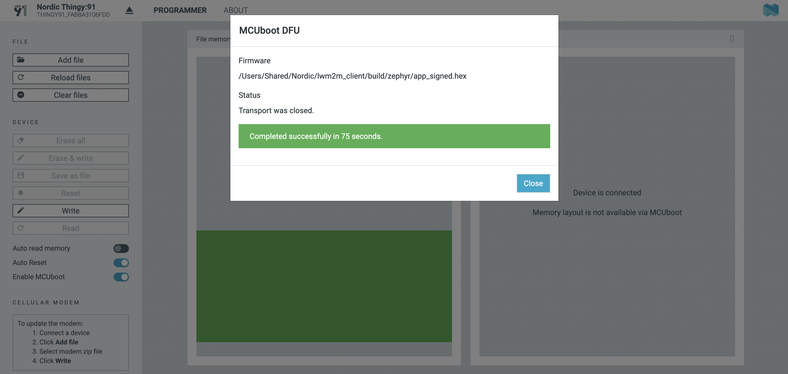
- Powercycle the Thingy:91 to activate the application.
Connect the Thingy:91 to Coiote IoT Device Management#
To connect the board:
- Log in to Coiote DM and from the left side menu, select Device Inventory.
- In Device Inventory, select Add device.
-
Select the Connect your LwM2M device directly via the Management server tile.

-
In the Device credentials step:
- Think of a unique Endpoint name.
- Key Identity is the same as the Endpoint name.
- Create a Key and store it somewhere to retrieve later when configuring your device.
- Click the Add device button and click Confirm in the confirmation pop-up.

Configure the Client#
-
With the Thingy:91 still connected to a serial port interface, connect to your device using a serial communication program (e.g. Minicom, RealTerm or PuTTY).
-
Use the
anjaycommand to list possible options:uart:~$ anjay anjay - Anjay commands Subcommands: start :Save config and start Anjay stop :Stop Anjay config :Configure Anjay paramsTip
To show available subcommands, press Tab.
-
Check your default credentials by following the instructions in the program:
anjay config show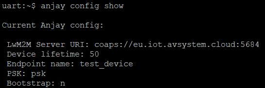
-
Update your device credentials by running the following commands:
-
To make any changes to the configuration, stop the client:
anjay stop -
To update the endpoint name, enter the endpoint name you created in Coiote:
anjay config set endpoint <endpoint name> -
To update the Pre-Shared Key, enter the key you created in Coiote:
anjay config set psk <key>
-
-
Start the client using the new configurations:
anjay start -
Go to the Coiote DM. If your device is connected successfully its status will change to Registered.
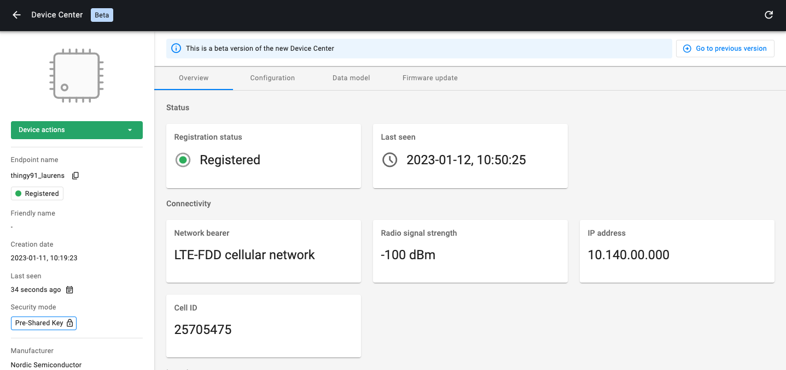
Part 2 - Enable nRF Cloud integration#
Follow the instructions listed here to enable the nRF Location Service integration.
If the connection to nRF Cloud Locator was successful, you will see the device location as a widget in the Coiote Device Center.
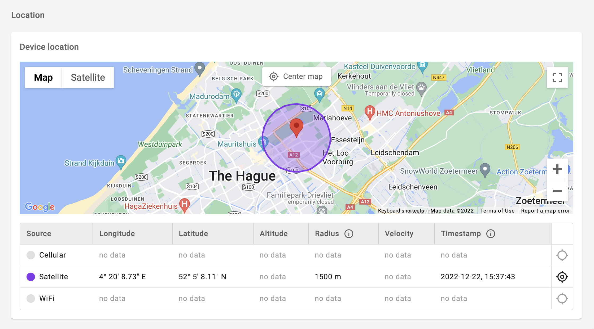
Part 3 - Connect Coiote to Microsoft Azure#
-
Start by logging into your Azure account. Create a new IoT Hub and a new storage account.
-
Get the IoT Hub connection string and Azure Blob storage string from your Azure account. For information on how to retrieve these details, see Get the IoT hub connection string.
-
In Coiote, click Integrations from the left-side menu and select Hyperscaler Integration Center.
Go to the Azure IoT Hub section and click Connect.
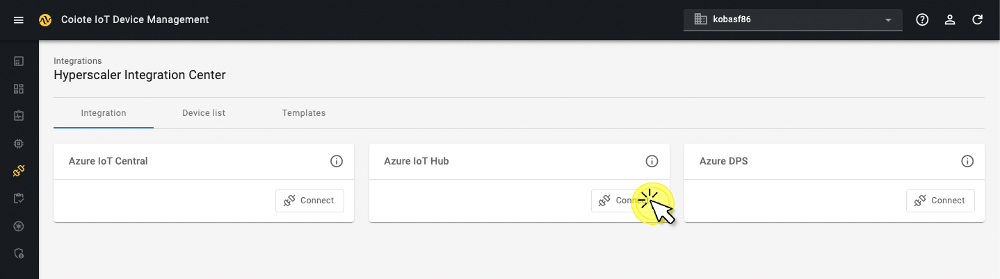
-
In the dialog window, paste the IoT Hub connection string and Azure Blob storage string into the relevant fields.
Create a new LwM2M template#
-
In Coiote DM, go to Integrations, open the tab Templates and create a new template by clicking the green button + Add new.
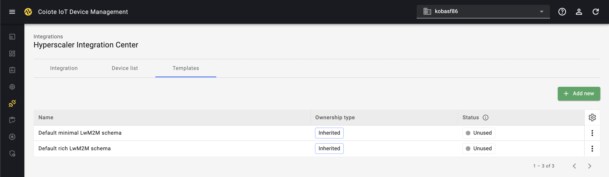
-
Name your template and click the button + Add missing objects
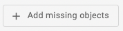
-
Select all of the following objects:
0- LwM2M Security1- LwM2M Server3- Device4- Connectivity Monitoring5- Firmware Update6- Location3303- Temperature3304- Humidity3313- Accelerometer3315- Barometer3347- Push button3420- LED color light10256- ECID-Signal Measurement information50001- Location Assistance
-
Set the CAPABILITY TYPE to Telemetry for the resources:
3303- Temperature/5601- Min Measured Value/5602- Max Measured Value/5700- Sensor Value
3304- Humidity/5601- Min Measured Value/5602- Max Measured Value/5700- Sensor Value
3313- Accelerometer/5702- X Value/5703- Y Value/5704- Z Value
3315- Barometer/5601- Min Measured Value/5602- Max Measured Value/5700- Sensor Value
3347- LED color light/5500- Digital Input State/5501- Digital Input Counter
Note
Although the Location object 6 sends telemetry data, all location resources need to be configured as Property.
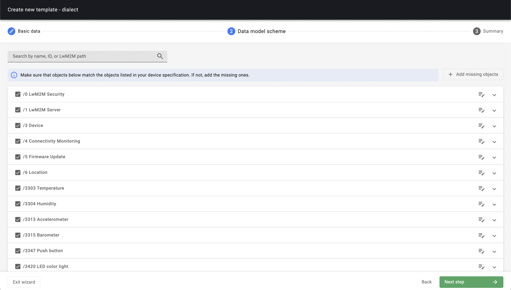
Connect your device to Azure#
In Coiote, visit your Device inventory. Find the device you want to connect to Azure, click the three dots icon and select Connect to Azure.
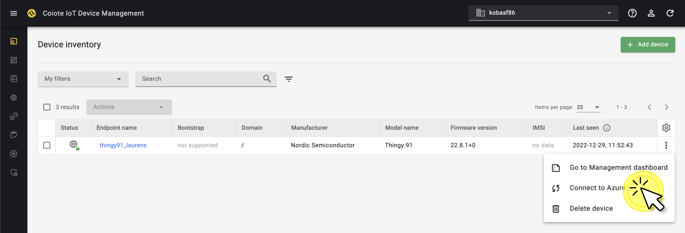
If the connection was successful, your device is now added to your Azure IoT Hub. You can find your device under: Device management > Devices.
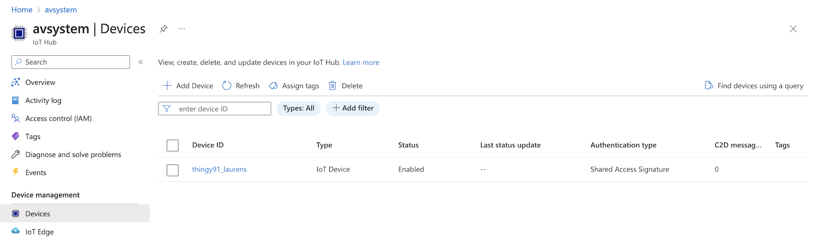
Set group value tracking on resources in Coiote DM#
- In Coiote DM, go to Device Groups.
- Open up the folder hyperscalercenter and open the subfolder which contains your device which is connected to Azure.
- Go to the Value tracking panel and click Add new. In the pop-up:
- Provide the resource path:
Temperature.0.Sensor Value. - In the Notification frequency section, provide the following values:
- At least once every - set it to 1 hour.
- Not more often than once every - set it to 10 minutes.
- Click Add new.
- Provide the resource path:
- Go through the same process for the resources:
Humidity.0.Sensor Value,Barometer.0.Sensor Value,Location.0.LatitudeandLocation.0.Longitude.
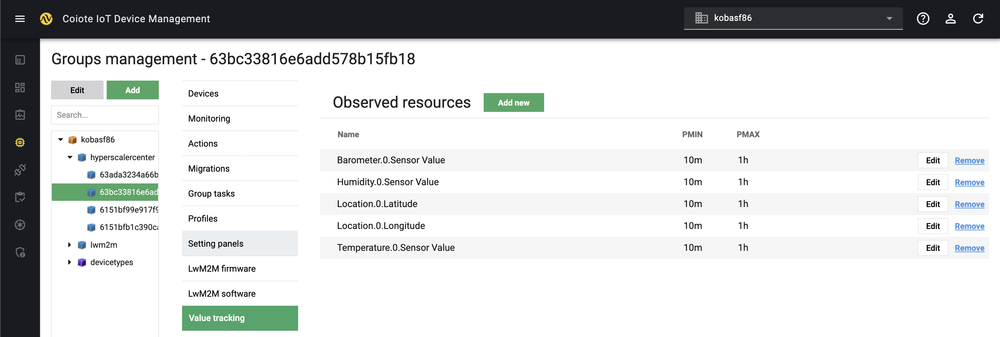
Part 4 - Connect Microsoft Azure to Power BI#
Configuring message routing for sending telemetry data in Azure IoT Hub#
Set up message routing#
-
Go to your Azure IoT hub and add message routing:
- In the left-side menu, under Hub settings, select Message routing and click + Add. 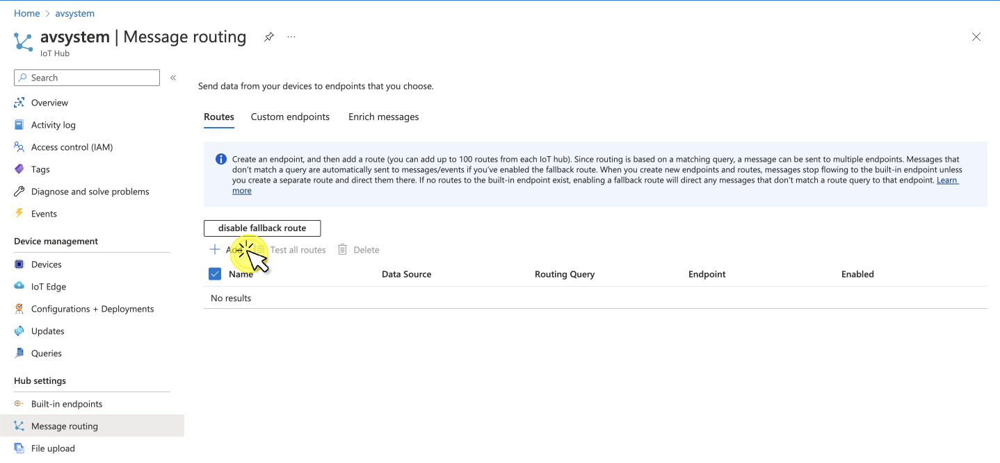
- Provide a name for your event, e.g.
EventRoute. - From the Endpoint drop-down list, select events.
- From the Data source drop-down list, select Device Telemetry Messages.
- In the Routing query, paste the following:
IS_DEFINED($body.lwm2m.6.0.0.value) OR IS_DEFINED($body.lwm2m.6.0.1.value) OR IS_DEFINED($body.lwm2m.3303.0.5700.value) OR IS_DEFINED($body.lwm2m.3304.0.5700.value) OR IS_DEFINED($body.lwm2m.3315.0.5700.value)- Click Save.
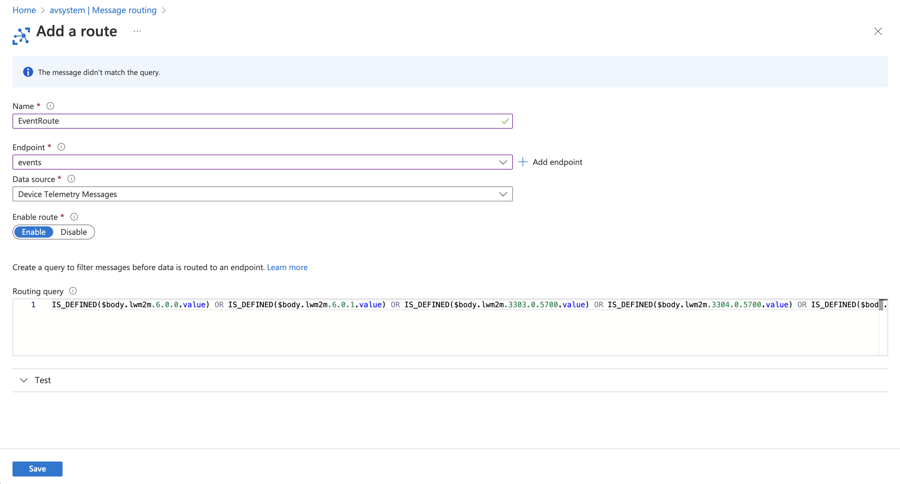
-
While in the Message routing panel, go to the Enrich messages tab to set up location tracking:
- For latitude:
- Name - type
lat - Value - copy and paste
$twin.properties.reported.lwm2m.6.0.0.value - Endpoint(s) - select
events
- Name - type
- For longitude:
- Name - type
lon - Value - copy and paste
$twin.properties.reported.lwm2m.6.0.1.value - Endpoint(s) - select
events
- Name - type
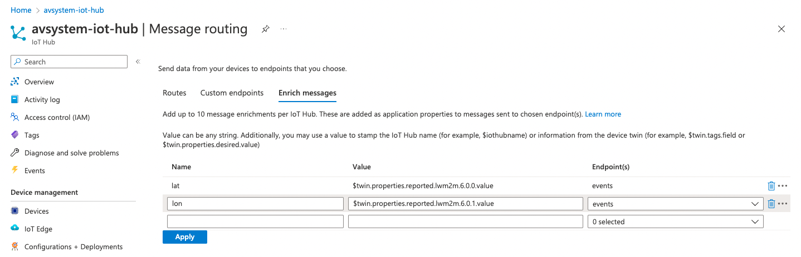
- For latitude:
Set up a Stream Analytics Job#
-
Use search to go to Stream analytics jobs and create a job for transferring the gathered data to Power BI.
-
Click + Create and provide the following:
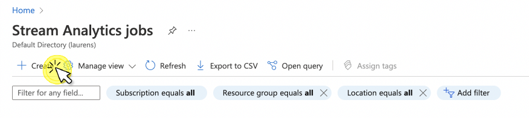
- Resource group - pick your resource group.
- Instance Name - e.g.
lwm2m-to-powerbi. - Region - select the region closest to your device’s location
- Click Review + Create.
- Once your deployment is complete, click Go to resource.
-
-
While in your Stream Analytics job panel, add a stream input and output and write a query:
- Under Job topology, select Inputs.
- From the + Add stream input drop-down list, select IoT Hub and provide the following:
- Input alias - e.g.
thingy91-input. - Consumer group - pick the
$Defaultgroup. - Click Save.
- Input alias - e.g.
- From the + Add stream input drop-down list, select IoT Hub and provide the following:
- Under Job topology, select Outputs.
- From the + Add drop-down list, select Power BI
- In the Power BI right-hand side panel, provide the following:
- Output alias - e.g.
thingy91-output - Select - Provide Power BI settings manually
- Group workspace - The ID can be found in the powerBI URL for the workspace.
- Authentication mode - User token
- Dataset name - e.g.
AVSystemIoTHubDataSet - Table name - e.g.
Data - Click the button Authorize and login to your Power BI account
- Output alias - e.g.
- Click Save.
-
Under Job topology, select Query.
- Paste the following query into the query input field (remember to adjust your naming inside the query if needed):
SELECT CAST("lwm2m"."3303"."0"."5700".value as float) as temperature, CAST("lwm2m"."3304"."0"."5700".value as float) as humidity, CAST("lwm2m"."3315"."0"."5700".value as float) as barometer, CAST("lwm2m"."3313"."0"."5702".value as float) as xValue, CAST("lwm2m"."3313"."0"."5703".value as float) as yValue, CAST("lwm2m"."3313"."0"."5704".value as float) as zValue, GetMetadataPropertyValue("thingy91-input", '[User].[lat]') as lat, GetMetadataPropertyValue("thingy91-input", '[User].[lon]') as lon, EventProcessedUtcTime as processedTimestamp, IoTHub.EnqueuedTime as iotHubTimestamp, IoTHub.ConnectionDeviceId as deviceId INTO "thingy91-output" FROM "thingy91-input"- Click Save query.
- Click Test query to validate if the query works as expected.
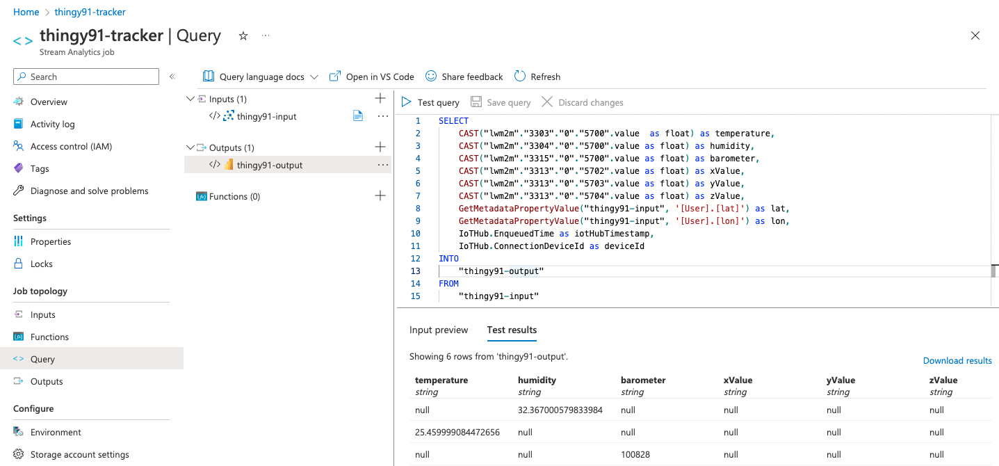
-
In your Stream analytics job, go to Overview and click Start. Confirm by clicking Start again in the right-wide window to run the created query.
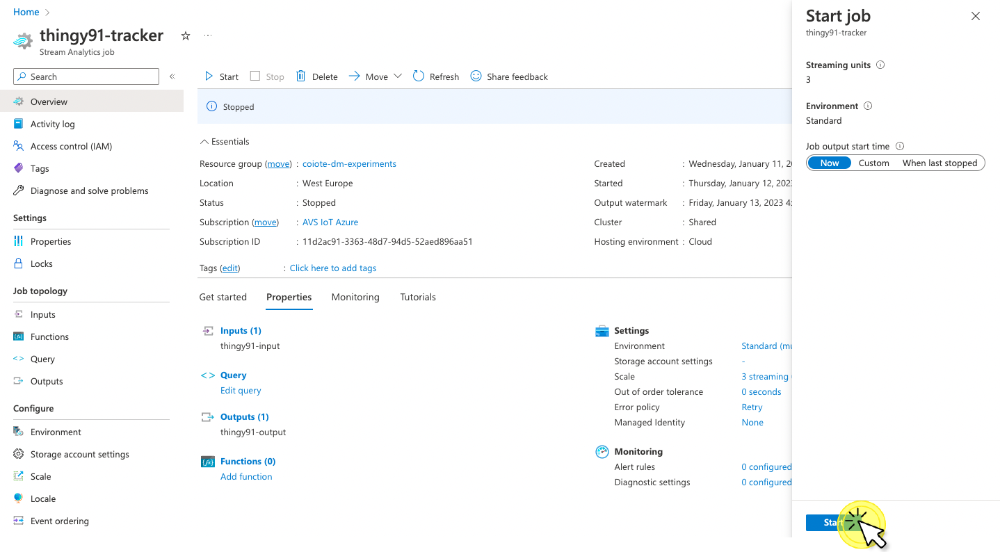
- Under Job topology, select Inputs.
Data visualization using Power BI#
Once the query is finished, you can go to Power BI to create a visualization for the data you have gathered.
- Go to https://powerbi.microsoft.com/ and sign in to your account.
- Go to the workspace you connected via Stream Analytics Jobs and find your recently created dataset.
-
Click the more options icon and select Create report.
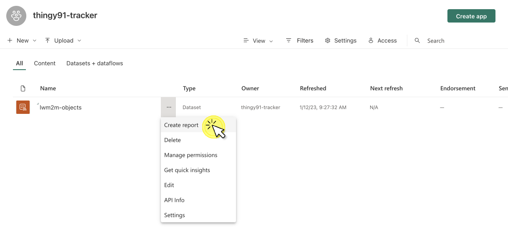
-
Now start building some nice visualizations, such as a map for your location and line charts for your temperature, humidity and barometer values.
Eventually, it may look something like this:
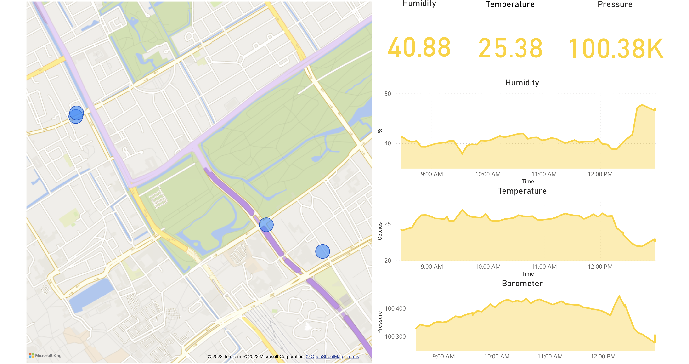
Info
Did you manage to setup the integration and display data in Power BI? Congratulations! If not, don't worry, there are many engineers ready to support you. Join our AVSystem Discord to get in touch with our experts.